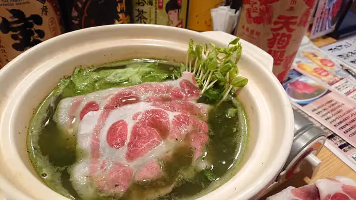
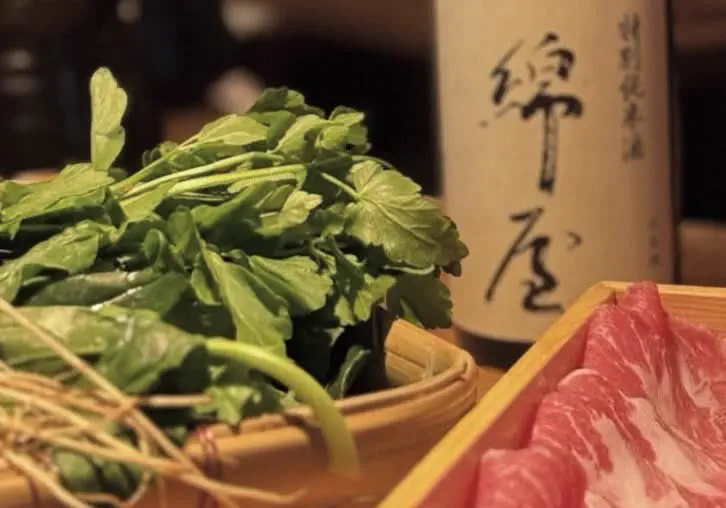

草鍋・しゃぶしゃぶ
宮城の青菜をどっさり入れた「草鍋」。出汁で野菜をしゃぶしゃぶし、豚肉を追加してお楽しみいただくくりはら屋のスタイルです。はしご酒の〆にもちょうどいい一鍋。
 株式会社けいか堂飲料店Kadoya Group / Yushima, Tokyo
株式会社けいか堂飲料店Kadoya Group / Yushima, Tokyo

湯島の路地裏、
宮城北部の食材、お料理とお酒に舌鼓。
弊社代表・村山の地元、宮城県北部「栗原」。その想いを注いだのが「くりはら屋」です。栗原のお米、農家直送の野菜、宮城の地酒を、余すところなく召し上がっていただきたい。木目の調度品に囲まれた隠れ家のような店内で、生産者の熱い想いを料理としてお届けします。
湯島駅から徒歩1分、上野広小路駅・御徒町駅からも歩いて5〜6分。上野・湯島エリアで、鍋と宮城の地酒をゆっくり楽しめる居酒屋をお探しの方に。深夜4時まで開いています。
栗原市の三つの蔵をはじめ、宮城の酒を取り揃えています。料理に合わせて、冷や・燗、お好みで。
銘柄は入荷状況により変わります。
| 店名 | 宮城北部の酒と肴 くりはら屋 |
|---|---|
| 住所 | 〒113-0034 東京都文京区湯島3-46-9 スギヤマビル 1F・2F |
| 電話 | 03-3831-5256 |
| 営業時間 | 18:00〜翌4:00（L.O. 3:00） |
| 定休日 | 日曜日 |
| お支払い | VISAMasterJCBAMEXDiners |
| アクセス | 東京メトロ千代田線 湯島駅 徒歩1分／銀座線 上野広小路駅 徒歩5分／JR御徒町駅 徒歩6分 |
| SNS・掲載 |
感染症の流行状況により、営業時間・定休日が記載と異なる場合がございます。ご来店時は事前に店舗にご確認ください。
18:00から翌4:00まで（ラストオーダー 3:00）営業しています。定休日は日曜日です。
東京メトロ千代田線 湯島駅 3番出口から徒歩1分です。銀座線 上野広小路駅からは徒歩5分、JR御徒町駅からは徒歩6分。「NORTHERN MIYAGI KURIHARAYA」の看板と「酒」の丸い看板が目印です。
宮城県北部・栗原の米と野菜を使った料理です。名物は野菜たっぷりの「草鍋」と豚しゃぶしゃぶ、一本ずつ丁寧に焼く焼鳥。お通しは野菜の小鍋です。栗駒山・萩の鶴・綿屋・伯楽星など、宮城の地酒も揃えています。
お電話（03-3831-5256）で承ります。1階と2階があり、少人数から宴会までご相談いただけます。
VISA・Master・JCB・AMEX・Diners がご利用いただけます。